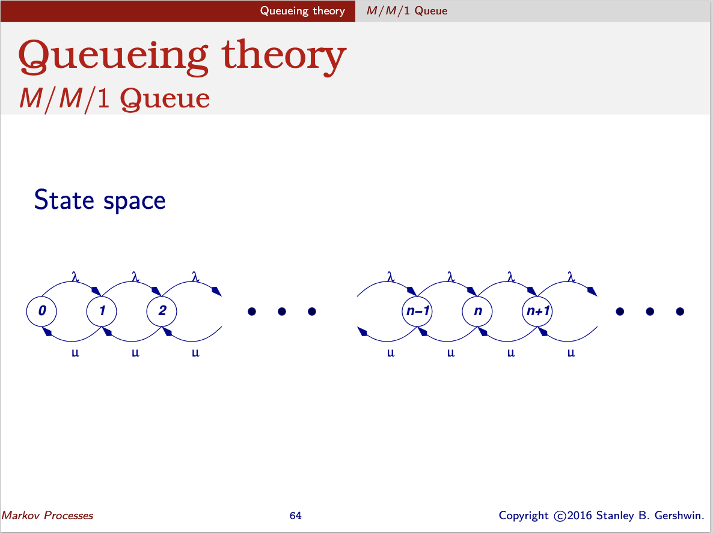
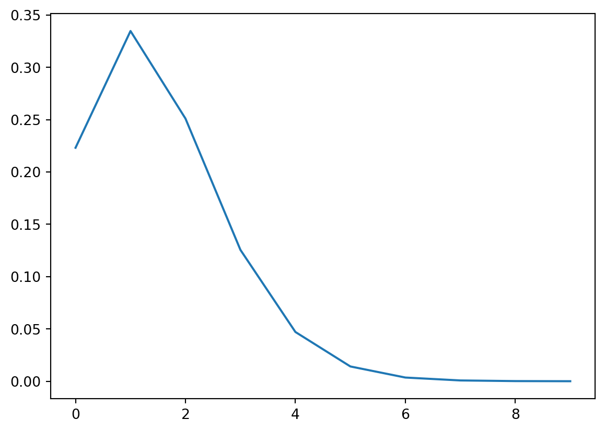
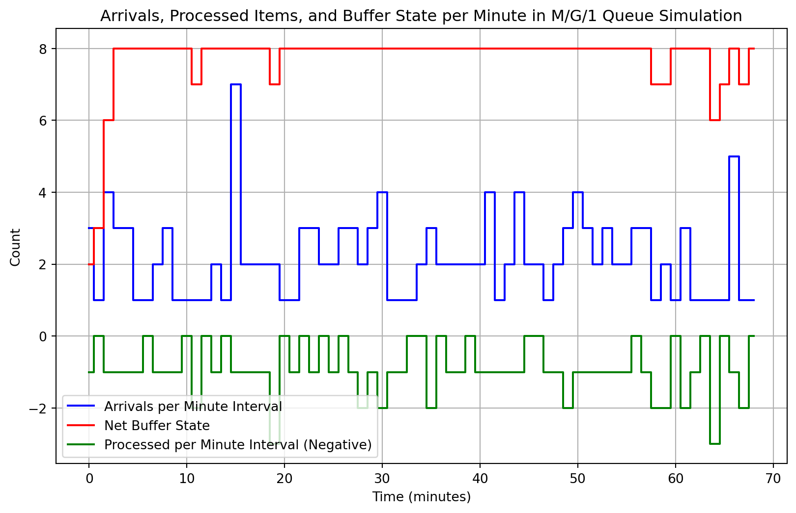

Consider a discrete-time single-server queueing system that is observed every \(\eta > 0\) units of time. The controller makes decisions at times \(0, \eta, 2\eta, \dots\). Jobs arrive following a Poisson distribution with a rate of 1.5 jobs per period of length \(\eta\). The system has a finite capacity of 8 units, meaning if arriving jobs cause the system content to exceed 8 units, the excess jobs do not enter the system and are lost.
At each decision epoch, the controller observes the number of jobs in the system and selects the service rate from a set of probability distributions indexed by elements of the set \(B = \{0, 1, 2\}\). For each \(b \in B\), let \(f_b(n)\) denote the probability of \(n\) service completions within a period of length \(\eta\) where:
\(f_0(1) = 0.8\), \(f_0(2) = 0.2\)
\(f_1(1) = 0.5\), \(f_1(2) = 0.5\)
\(f_2(1) = 0.2\), \(f_2(2) = 0.8\)
The stationary reward structure consists of four components:
A constant reward \(R = 5\) for every completed service.
An expected holding cost \(h(s) = 2s\) per period when there are \(s\) jobs in the system.
A fixed cost \(K = 3\) for changing the service rate.
A per-period cost \(d(b)\) for using service rate \(b\), where:
\(d(0) = 0\)
\(d(1) = 2\)
\(d(2) = 5\)
We are tasked with determining a minimum-cost service rate control policy.
(a) Problem Formulation
Formulate the problem as an infinite horizon Markov decision process (MDP).
Choose the optimality criterion: average costs or discounted costs, and provide justification.
Develop the model and algorithm to compute the optimal policies and value.
Write your own code for the algorithm (do not use existing MDP libraries).
Please Report:
Model description
Your choice of optimality criterion, including motivation
Solution algorithm (including motivation)
Numerical results and a discussion of those
(b) Additional Constraint
Now, suppose we require that the server may work at service rate \(b = 2\) for at most 25% of the time. Model and solve this adjusted problem.

Tests
import numpy as npimport matplotlib.pyplot as pltimport mathdef poisson_function(lam, k):return (lam**k) * np.exp(-lam) / math.factorial(k)## Test the poisson functionassert poisson_function(1.5, 0) ==0.22313016014842982## Plot the poisson functionx = np.arange(0, 10, 1)plt.plot(x, [poisson_function(1.5, i) for i in x])plt.show()

Simulation
import simpyimport randomimport matplotlib.pyplot as plt# Parameters for the queueRANDOM_SEED =42ARRIVAL_RATE =1.5# lambda (arrival rate per time unit)SIM_TIME =100# total simulation time (in minutes)BUFFER_CAPACITY =8# buffer can hold up to 8 items# Data tracking for plottingarrivals_per_interval = [] # List to track arrivals in each minutebuffer_state_per_interval = [] # List to track buffer state at the end of each minuteprocessed_per_interval = [] # List to track processed items during each minutecurrent_interval =0arrivals_this_interval =0processed_this_interval =0# Define the service time distributiondef service_time():return random.choices([1, 2], [0.5, 0.5])[0] # 50% chance of 1 or 2 units of time# Customer arrival processdef customer(env, name, server):global current_interval, arrivals_this_interval, processed_this_interval# Track arrivals in the current intervalifint(env.now) > current_interval:# Store the number of arrivals and processed items in the previous minute arrivals_per_interval.append(arrivals_this_interval) processed_per_interval.append(-processed_this_interval) # Store as negative to indicate processing# Store the net buffer state (arrivals - processed) at the end of the interval buffer_state_per_interval.append(min(buffer_state_per_interval[-1]+arrivals_this_interval-processed_this_interval,8))# Update to the next interval and reset the counters current_interval =int(env.now) arrivals_this_interval =0 processed_this_interval =0# Increment arrivals for the current interval arrivals_this_interval +=1# Check if buffer has spaceiflen(server.queue) +len(server.users) < BUFFER_CAPACITY:with server.request() as request:yield request service_duration = service_time()yield env.timeout(service_duration) processed_this_interval +=1else:# If buffer is full, discard the arrivalprint(f"{name} discarded due to full buffer at time {env.now:.2f}")# Process generating customersdef source(env, server): i =0whileTrue: interarrival_time = random.expovariate(ARRIVAL_RATE)yield env.timeout(interarrival_time) i +=1 env.process(customer(env, f'Customer {i}', server))# Setup and start the simulationprint('M/G/1 queue simulation with Poisson arrivals, discrete service times, and a buffer')random.seed(RANDOM_SEED)env = simpy.Environment()# Server with a single resource (1 server)server = simpy.Resource(env, capacity=1)# Initialize the buffer state (starting at 0)buffer_state_per_interval.append(0)# Start the arrival of customersenv.process(source(env, server))# Run the simulationenv.run(until=SIM_TIME)# Append the last interval's dataarrivals_per_interval.append(arrivals_this_interval)processed_per_interval.append(-processed_this_interval)buffer_state_per_interval.append(min(buffer_state_per_interval[-1]+arrivals_this_interval-processed_this_interval,8))print(len(arrivals_per_interval), len(processed_per_interval), len(buffer_state_per_interval))print(buffer_state_per_interval)# Generate a list of time intervals for the x-axisinterval_times =list(range(len(arrivals_per_interval)))# Plotting the tracked dataplt.figure(figsize=(10, 6))# Plot number of arrivals per minuteplt.step(interval_times, arrivals_per_interval, where='mid', label='Arrivals per Minute Interval', color='blue')# Plot buffer state at the end of each intervalplt.step(interval_times, buffer_state_per_interval[1:], where='mid', label='Net Buffer State', color='red')# Plot processed items as negative numbersplt.step(interval_times, processed_per_interval, where='mid', label='Processed per Minute Interval (Negative)', color='green')plt.xlabel('Time (minutes)')plt.ylabel('Count')plt.title('Arrivals, processed items, and buffer state per time unit in M/G/1 queue simulation')plt.grid(True)plt.legend()plt.show()plt.close()
M/G/1 queue simulation with Poisson arrivals, discrete service times, and a buffer
Customer 11 discarded due to full buffer at time 4.32
Customer 13 discarded due to full buffer at time 5.19
Customer 14 discarded due to full buffer at time 5.78
Customer 17 discarded due to full buffer at time 8.25
Customer 18 discarded due to full buffer at time 8.37
Customer 20 discarded due to full buffer at time 10.53
Customer 21 discarded due to full buffer at time 10.60
Customer 24 discarded due to full buffer at time 13.46
Customer 28 discarded due to full buffer at time 18.27
Customer 29 discarded due to full buffer at time 19.08
Customer 30 discarded due to full buffer at time 19.11
Customer 31 discarded due to full buffer at time 19.29
Customer 32 discarded due to full buffer at time 19.51
Customer 33 discarded due to full buffer at time 19.57
Customer 35 discarded due to full buffer at time 19.96
Customer 36 discarded due to full buffer at time 20.64
Customer 38 discarded due to full buffer at time 21.10
Customer 39 discarded due to full buffer at time 21.30
Customer 42 discarded due to full buffer at time 24.64
Customer 47 discarded due to full buffer at time 29.97
Customer 48 discarded due to full buffer at time 30.00
Customer 49 discarded due to full buffer at time 30.25
Customer 50 discarded due to full buffer at time 30.46
Customer 51 discarded due to full buffer at time 30.61
Customer 53 discarded due to full buffer at time 32.77
Customer 54 discarded due to full buffer at time 33.49
Customer 56 discarded due to full buffer at time 34.23
Customer 57 discarded due to full buffer at time 34.44
Customer 58 discarded due to full buffer at time 34.62
Customer 59 discarded due to full buffer at time 35.17
Customer 60 discarded due to full buffer at time 35.38
Customer 62 discarded due to full buffer at time 36.30
Customer 63 discarded due to full buffer at time 36.47
Customer 66 discarded due to full buffer at time 40.58
Customer 68 discarded due to full buffer at time 41.61
Customer 69 discarded due to full buffer at time 41.65
Customer 70 discarded due to full buffer at time 41.97
Customer 75 discarded due to full buffer at time 48.56
Customer 76 discarded due to full buffer at time 49.24
Customer 77 discarded due to full buffer at time 49.32
Customer 80 discarded due to full buffer at time 51.95
Customer 81 discarded due to full buffer at time 52.42
Customer 82 discarded due to full buffer at time 52.55
Customer 84 discarded due to full buffer at time 54.41
Customer 86 discarded due to full buffer at time 55.20
Customer 87 discarded due to full buffer at time 56.16
Customer 88 discarded due to full buffer at time 56.67
Customer 90 discarded due to full buffer at time 57.68
Customer 91 discarded due to full buffer at time 57.94
Customer 92 discarded due to full buffer at time 57.95
Customer 95 discarded due to full buffer at time 60.94
Customer 97 discarded due to full buffer at time 62.41
Customer 98 discarded due to full buffer at time 62.85
Customer 99 discarded due to full buffer at time 62.90
Customer 101 discarded due to full buffer at time 63.94
Customer 102 discarded due to full buffer at time 64.37
Customer 103 discarded due to full buffer at time 64.90
Customer 104 discarded due to full buffer at time 65.11
Customer 106 discarded due to full buffer at time 66.64
Customer 108 discarded due to full buffer at time 67.31
Customer 109 discarded due to full buffer at time 67.56
Customer 113 discarded due to full buffer at time 71.96
Customer 114 discarded due to full buffer at time 72.55
Customer 116 discarded due to full buffer at time 72.77
Customer 117 discarded due to full buffer at time 73.44
Customer 118 discarded due to full buffer at time 73.61
Customer 120 discarded due to full buffer at time 75.23
Customer 121 discarded due to full buffer at time 75.41
Customer 123 discarded due to full buffer at time 76.24
Customer 125 discarded due to full buffer at time 78.50
Customer 127 discarded due to full buffer at time 79.66
Customer 128 discarded due to full buffer at time 79.73
Customer 129 discarded due to full buffer at time 80.11
Customer 130 discarded due to full buffer at time 80.47
Customer 132 discarded due to full buffer at time 81.64
Customer 138 discarded due to full buffer at time 86.95
Customer 141 discarded due to full buffer at time 90.01
Customer 145 discarded due to full buffer at time 96.66
Customer 147 discarded due to full buffer at time 96.87
Customer 148 discarded due to full buffer at time 97.18
69 69 70
[0, 2, 3, 6, 8, 8, 8, 8, 8, 8, 8, 8, 7, 8, 8, 8, 8, 8, 8, 8, 7, 8, 8, 8, 8, 8, 8, 8, 8, 8, 8, 8, 8, 8, 8, 8, 8, 8, 8, 8, 8, 8, 8, 8, 8, 8, 8, 8, 8, 8, 8, 8, 8, 8, 8, 8, 8, 8, 8, 7, 7, 8, 8, 8, 8, 6, 7, 8, 7, 8]

Solution exercise 3.1 from notes G. Koole
Exercise 3.1 Consider a Markov chain with \(X = \{1, 2, 3, 4\}\),
Assumption 2.1.1
There exists a state, \(\Delta \in S\) with the following properties:
\(\Delta\) is an absorbing, zero reward state under any Markov policy, i.e., \(A(\Delta) = \{0\}\), \(p_{\Delta, \Delta}(0) = 1\), \(r_{\Delta}(0) = 0\), and \(M(\Delta) = 1\);
For all \(i \in S\), \(a \in A(i)\), and some constant \(\gamma \in (0, 1)\), \[
\sum_{j \neq \Delta} p_{ij}(a) M(j) \leq \gamma M(i).
\]
Moreover,
Let \(r := \sup_{a \in A(i)} \frac{|r_i(a)|}{M(i)} < \infty\).
To understand this mathematical statement, let’s break down each part using simple concepts and then move on to building examples in Python.
Explanation of Each Part
State \(\Delta\) as a Special State:
We assume there exists a particular state, denoted as \(\Delta\), which is part of the state space \(S\).
\(\Delta\) is an absorbing state. This means that once the system enters \(\Delta\), it remains there forever (like a “sink” state in a Markov chain).
Absorbing, Zero Reward State:
In state \(\Delta\), the only available action has a reward of zero. This means the system has no incentive to enter or stay in this state.
Notationally, this is expressed as:
\(A(\Delta) = \{0\}\): The only action in \(\Delta\) is zero.
\(p_{\Delta,\Delta}(0) = 1\): With probability 1, the system stays in \(\Delta\) after choosing action 0.
\(r_{\Delta}(0) = 0\): The reward in \(\Delta\) for action 0 is zero.
\(M(\Delta) = 1\): This could represent the importance or weight of this state, set to 1 for simplicity.
Condition on Transition Probabilities:
For any state \(i\) (not equal to \(\Delta\)) and any action \(a\) available in that state, the probability-weighted sum of transitions to all other states \(j \neq \Delta\) (scaled by \(M(j)\)) is bounded above by \(\gamma M(i)\).
Here, \(\gamma\) is a constant less than 1, which ensures that states move toward \(\Delta\) over time in a weighted sense.
Bounded Rewards Condition:
The reward function is bounded. Specifically, the highest possible reward, scaled by \(M(i)\), across all states and actions is finite.
Python Examples
Let’s create Python code that constructs three simple examples of systems that satisfy the above conditions.
Example 1: Simple Markov Chain with an Absorbing State
In this example, we’ll set up a Markov chain with three states where state 2 (\(\Delta\)) is absorbing.
# Example 1: Simple Markov Chain with absorbing state ∆import numpy as npimport networkx as nx# Define states and actionsstates = [0, 1, 2] # State 2 is the absorbing state (∆)actions = [0, 1] # Action set, with only action 0 in state 2# Transition probabilities# Format: P[state][action][next_state]P = {0: {0: [0.7, 0.3, 0.0], 1: [0.4, 0.6, 0.0]}, # State 0 transitions1: {0: [0.2, 0.7, 0.1], 1: [0.1, 0.5, 0.4]}, # State 1 transitions2: {0: [0.0, 0.0, 1.0]} # State 2 is absorbing}# Rewards for each action in each stateR = {0: {0: 5, 1: 3}, # State 0 rewards1: {0: 4, 1: 2}, # State 1 rewards2: {0: 0} # State 2 has zero reward (absorbing)}# State importance/weight function MM = [0.5, 1.0, 1.0] # State 2 is absorbing, so its importance is set to 1
Example 3: A System with Different Rewards and Cost Structure
Here’s a variant with different rewards and where the absorbing state is reached only after several transitions.
# Example 3: Complex system with delayed transition to absorbing state# Define states and actionsstates = [0, 1, 2]actions = [0, 1]# Transition probabilities with a focus on eventually reaching the absorbing stateP = {0: {0: [0.5, 0.5, 0.0], 1: [0.3, 0.6, 0.1]},1: {0: [0.2, 0.4, 0.4], 1: [0.1, 0.4, 0.5]},2: {0: [0.0, 0.0, 1.0]} # Absorbing state}# Rewards with varying values but zero reward in state 2R = {0: {0: 7, 1: 3},1: {0: 2, 1: 6},2: {0: 0}}# State importance/weight function M, with a finite boundM = [1.0, 0.8, 1.0]
States and Actions: Each state and action pair has transition probabilities and rewards.
Transition Probabilities (P): Probabilities of moving from one state to another based on chosen actions, with state 2 absorbing.
Rewards (R): Each action has a reward in each state, with zero reward in the absorbing state.
Importance (M): The weights or importance levels of each state, helping to satisfy the bounded reward condition.
Lemma 2.1.1
Suppose that Assumption 2.1.1 holds. Then, for all Markov policies \(\sigma\), the following statements hold:
1. Probability Bound for Remaining Time Before Absorption: \[
P^\sigma_i \{\tau_\Delta > n\} \leq \gamma^n M(i), \quad i \in S, \quad n = 1, 2, \dots
\] where \(\tau_\Delta = \min \{ n \geq 1 \mid X_n = \Delta \}\).
This means that the probability of not reaching the absorbing state \(\Delta\) by step \(n\) decays at a rate proportional to \(\gamma^n\) and is scaled by \(M(i)\), the importance of the initial state \(i\).
2. Expected Time to Absorption: \[
E^\sigma_i [\tau_\Delta] = \sum_{n \geq 0} P^\sigma_i \{\tau_\Delta > n\} \leq \frac{M(i)}{1 - \gamma}
\] The expected time to reach the absorbing state \(\Delta\) (starting from state \(i\)) is bounded by \(\frac{M(i)}{1 - \gamma}\), ensuring that the process reaches \(\Delta\) within a finite expected time.
3. Bound on Expected Reward at Each Step Before Absorption: \[
E^\sigma_i \left[ \left| r_{X_n}(A_n) \right| \right] \leq r \cdot \gamma^n M(i)
\] This inequality provides a bound on the expected absolute reward at step \(n\), showing that it decays at a rate of \(\gamma^n\), scaled by \(M(i)\) and a constant \(r\) (the maximum possible reward per unit of importance).
4. Bound on Total Expected Reward Until Absorption: \[
E^\sigma_i \left[ \sum_{n=0}^{\tau_\Delta} \left| r_{X_n}(A_n) \right| \right] \leq \frac{r}{1 - \gamma} M(i), \quad i \in S
\] This final bound indicates that the total expected reward accumulated from the starting state \(i\) until reaching \(\Delta\) is finite and depends on \(M(i)\), \(r\), and \(\gamma\). The bound ensures that the rewards do not accumulate indefinitely, given \(\gamma < 1\).
Let’s break down each part of Lemma 2.1.1, which provides results about certain expectations and probabilities under a Markov policy, given that Assumption 2.1.1 holds.
Context and Key Terms
Assumption 2.1.1: This assumption specifies that there exists an absorbing state \(\Delta\) in the state space \(S\), with certain properties related to transition probabilities, rewards, and importance weights.
Markov Policy\(\sigma\): A policy that decides actions based on the current state without considering previous history.
Absorbing Time \(\tau_\Delta\): This is defined as \(\tau_\Delta = \min \{ n \geq 1 | X_n = \Delta \}\), meaning it is the first time (after at least one step) that the process reaches the absorbing state \(\Delta\).
Statement of Lemma 2.1.1
Under Assumption 2.1.1, the lemma asserts the following results:
Probability Bound for Remaining Time Before Absorption: \[
P^\sigma_i \{\tau_\Delta > n\} \leq \gamma^n M(i), \quad i \in S, \quad n = 1, 2, \dots
\]
Interpretation: This part states that the probability of staying outside the absorbing state \(\Delta\) for more than \(n\) steps decays at an exponential rate, \(\gamma^n\), and is scaled by the importance weight \(M(i)\) of the initial state \(i\).
This result tells us that the probability of not reaching the absorbing state decreases rapidly over time, due to the \(\gamma^n\) term (where \(\gamma < 1\)).
Expected Time to Absorption: \[
E^\sigma_i [\tau_\Delta] = \sum_{n \geq 0} P^\sigma_i \{\tau_\Delta > n\} \leq \frac{M(i)}{1 - \gamma}
\]
Interpretation: The expected time to reach the absorbing state \(\Delta\) (starting from state \(i\)) is bounded above by \(\frac{M(i)}{1 - \gamma}\).
This bound implies that, on average, the process reaches the absorbing state fairly quickly because \(\gamma\) is less than 1, causing the expected time to be finite.
Bound on Expected Reward at Each Step Before Absorption: \[
E^\sigma_i \left[ |r_{X_n}(A_n)| \right] \leq r \cdot \gamma^n M(i)
\]
Interpretation: Here, \(E^\sigma_i\left[ |r_{X_n}(A_n)| \right]\) represents the expected absolute reward at step \(n\) while following policy \(\sigma\).
The bound shows that the expected reward decays exponentially by \(\gamma^n\), and it is also scaled by \(M(i)\) and a constant \(r\) (related to the maximum possible reward per unit of importance).
Bound on Total Expected Reward Until Absorption: \[
E^\sigma_i \left[ \sum_{n=0}^{\tau_\Delta} |r_{X_n}(A_n)| \right] \leq \frac{r}{1 - \gamma} M(i)
\]
Interpretation: This part provides a bound on the total expected reward accumulated from the starting state \(i\) until the process reaches the absorbing state \(\Delta\).
It tells us that the total expected reward is finite and depends on the importance weight \(M(i)\) and constants \(r\) and \(\gamma\). Since \(\gamma < 1\), this total is also bounded, implying that rewards don’t accumulate indefinitely.
Summary of Lemma 2.1.1
This lemma states that, under certain conditions:
The probability of not reaching the absorbing state within \(n\) steps decreases exponentially.
The expected time to reach the absorbing state is finite and bounded by \(\frac{M(i)}{1 - \gamma}\).
The expected reward at each step and the total reward until absorption are both bounded, ensuring that the process does not accumulate excessive rewards over time.
Each result in the lemma essentially uses the fact that \(\gamma < 1\) to show that the system’s behavior is controlled and converges towards the absorbing state, rather than diverging.
Algorithm 1: Policy Iteration
Initialization:
Set \(n := 0\). Choose any initial stationary, deterministic policy \(f_0 = (f_0, \dots)\).
Step 1:
Compute \(V_{f_n}\) by solving: \[
V_{f_n} = T_{f_n} V_{f_n} = r(f_n) + P(f_n) V_{f_n}.
\] For small problems, this can be done by matrix inversion: \[
V_{f_n} = (I - P(f_n))^{-1} r(f_n).
\]
Step 2:
Set \(f := f_n\) and compute \(f_{n+1} = f'\) based on Equation (2.4.1), taking \(f = f'\) if possible.
Step 3:
If \(f_{n+1} = f_n\), then this policy is optimal. Stop.
Otherwise, set \(n := n + 1\) and return to Step 1.
import numpy as np# Define states and actionsstates = [0, 1] # For simplicity, consider two statesactions = [0, 1] # Two actions per state# Transition probabilities P[state][action][next_state]# For example, P[0][0][1] = 0.3 means from state 0, taking action 0, there is a 30% chance to move to state 1.P = {0: {0: [0.7, 0.3], 1: [0.4, 0.6]}, # State 0 transitions1: {0: [0.2, 0.8], 1: [0.1, 0.9]}, # State 1 transitions}# Rewards for each action in each state# R[state][action] gives the reward for taking the specified action in the given state.R = {0: {0: 5, 1: 2}, # State 0 rewards1: {0: 3, 1: 4}, # State 1 rewards}# Discount factor for future rewardsgamma =0.9# Initialize an arbitrary policy where both states take action 0policy = {0: 0, 1: 0} # Start with action 0 for both statesdef policy_evaluation(policy):"""Evaluate the current policy by solving the linear system for V.""" num_states =len(states) A = np.eye(num_states) # Identity matrix for (I - gamma * P(policy)) b = np.zeros(num_states) # Initialize reward vector# Build system of equations to solve for Vfor s in states: action = policy[s]# Update the diagonal element for the current state A[s][s] -= gamma * P[s][action][s]for next_state in states:# Update off-diagonal elements for transitions to other statesif next_state != s: A[s][next_state] -= gamma * P[s][action][next_state] b[s] = R[s][action] # Set the reward for current state and action V = np.linalg.solve(A, b) # Solve for V using matrix inversionreturn Vdef policy_improvement(V):"""Generate a new policy by choosing actions that maximize expected future rewards.""" new_policy = {}for s in states:# Calculate expected rewards for each action action_values = [ R[s][a] + gamma *sum(P[s][a][next_state] * V[next_state] for next_state in states)for a in actions ]# Select the action with the maximum expected value new_policy[s] = np.argmax(action_values)return new_policy# Main loop for policy iterationis_policy_stable =Falseiteration =0whilenot is_policy_stable:print(f"Iteration {iteration}: Policy {policy}")# Step 1: Policy Evaluation - calculate value function for current policy V = policy_evaluation(policy)# Step 2: Policy Improvement - get a new policy based on the value function new_policy = policy_improvement(V)# Check if the policy has stabilized (no change in policy)if new_policy == policy: is_policy_stable =Trueprint("Optimal policy found!")else: policy = new_policy # Update policy for the next iteration iteration +=1# Output the final optimal policy and corresponding value functionprint("Final optimal policy:", policy)print("Value function for optimal policy:", V)
Iteration 0: Policy {0: 0, 1: 0}
Iteration 1: Policy {0: 0, 1: 1}
Optimal policy found!
Final optimal policy: {0: 0, 1: 1}
Value function for optimal policy: [44.13043478 41.95652174]
import numpy as np# Define states and actionsstates = [s for s inrange(8)] # For simplicity, consider two statesactions = [0, 1] # Two actions per state# Transition probabilities P[state][action][next_state]# For example, P[0][0][1] = 0.3 means from state 0, taking action 0, there is a 30% chance to move to state 1.P = {0: {0: [0.05, 0.15, 0.15, 0.15, 0.15, 0.15, 0.15, 0.05], 1: [0.05, 0.1, 0.1, 0.2, 0.2, 0.15, 0.15, 0.05]}, # State 0 transitions1: {0: [0.05, 0.15, 0.15, 0.15, 0.15, 0.15, 0.15, 0.05], 1: [0.05, 0.1, 0.1, 0.2, 0.2, 0.15, 0.15, 0.05]}, # Etc.2: {0: [0.05, 0.15, 0.15, 0.15, 0.15, 0.15, 0.15, 0.05], 1: [0.05, 0.1, 0.1, 0.2, 0.2, 0.15, 0.15, 0.05]},3: {0: [0.05, 0.15, 0.15, 0.15, 0.15, 0.15, 0.15, 0.05], 1: [0.05, 0.1, 0.1, 0.2, 0.2, 0.15, 0.15, 0.05]},4: {0: [0.05, 0.15, 0.15, 0.15, 0.15, 0.15, 0.15, 0.05], 1: [0.05, 0.1, 0.1, 0.2, 0.2, 0.15, 0.15, 0.05]},5: {0: [0.05, 0.15, 0.15, 0.15, 0.15, 0.15, 0.15, 0.05], 1: [0.05, 0.1, 0.1, 0.2, 0.2, 0.15, 0.15, 0.05]},6: {0: [0.05, 0.15, 0.15, 0.15, 0.15, 0.15, 0.15, 0.05], 1: [0.05, 0.1, 0.1, 0.2, 0.2, 0.15, 0.15, 0.05]},7: {0: [0.05, 0.15, 0.15, 0.15, 0.15, 0.15, 0.15, 0.05], 1: [0.05, 0.1, 0.1, 0.2, 0.2, 0.15, 0.15, 0.05]},}# Rewards for each action in each state# R[state][action] gives the reward for taking the specified action in the given state.R = {0: {0: 5, 1: 2}, # State 0 rewards1: {0: 3, 1: 4}, # Etc.2: {0: 3, 1: 4},3: {0: 3, 1: 4},4: {0: 3, 1: 4},5: {0: 3, 1: 4},6: {0: 3, 1: 4},7: {0: 3, 1: 4},}# Discount factor for future rewardsgamma =0.9# Initialize an arbitrary policy where both states take action 0policy = {i: 0for i inrange(8)} # Start with action 0 for both statesdef policy_evaluation(policy):"""Evaluate the current policy by solving the linear system for V.""" num_states =len(states) A = np.eye(num_states) # Identity matrix for (I - gamma * P(policy)) b = np.zeros(num_states) # Initialize reward vector# Build system of equations to solve for Vfor s in states: action = policy[s]# Update the diagonal element for the current state A[s][s] -= gamma * P[s][action][s]for next_state in states:# Update off-diagonal elements for transitions to other statesif next_state != s: A[s][next_state] -= gamma * P[s][action][next_state] b[s] = R[s][action] # Set the reward for current state and action V = np.linalg.solve(A, b) # Solve for V using matrix inversionreturn Vdef policy_improvement(V):"""Generate a new policy by choosing actions that maximize expected future rewards.""" new_policy = {}for s in states:# Calculate expected rewards for each action action_values = [ R[s][a] + gamma *sum(P[s][a][next_state] * V[next_state] for next_state in states)for a in actions ]# Select the action with the maximum expected value new_policy[s] = np.argmax(action_values)return new_policy# Main loop for policy iterationis_policy_stable =Falseiteration =0whilenot is_policy_stable:print(f"Iteration {iteration}: Policy {policy}")# Step 1: Policy Evaluation - calculate value function for current policy V = policy_evaluation(policy)# Step 2: Policy Improvement - get a new policy based on the value function new_policy = policy_improvement(V)# Check if the policy has stabilized (no change in policy)if new_policy == policy: is_policy_stable =Trueprint("Optimal policy found!")else: policy = new_policy # Update policy for the next iteration iteration +=1# Output the final optimal policy and corresponding value functionprint("Final optimal policy:", policy)print("Value function for optimal policy:", V)